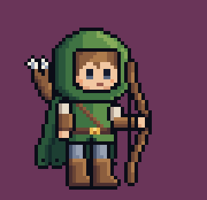
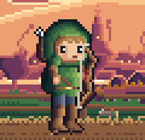

El Ranger nuevo, junto al actual y a los enemigos
De izquierda a derecha: el Ranger nuevo quieto y con el arco tensado, el Ranger actual, y tres enemigos (templario, cazador furtivo, monje).

De izquierda a derecha: el Ranger nuevo quieto y con el arco tensado, el Ranger actual, y tres enemigos (templario, cazador furtivo, monje).
Quieto (respira, parpadea, la capa se mece) y el disparo: sube el arco, coge la cuerda, tensa hasta la mejilla, aguanta, suelta y vuelve. A la derecha, sobre el fondo del mundo 1 a tamaño de juego ×3.

